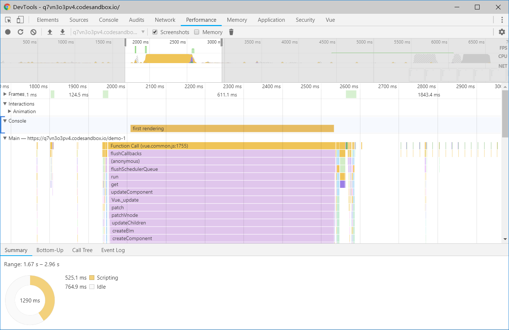
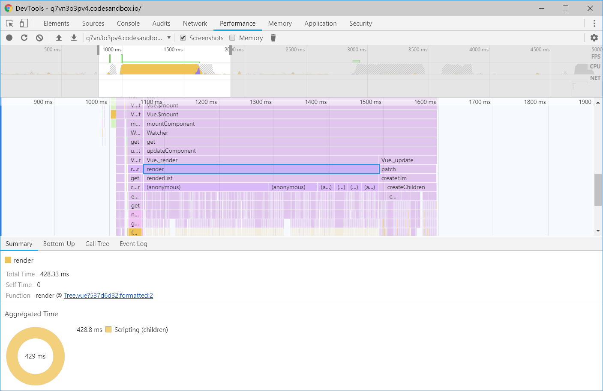
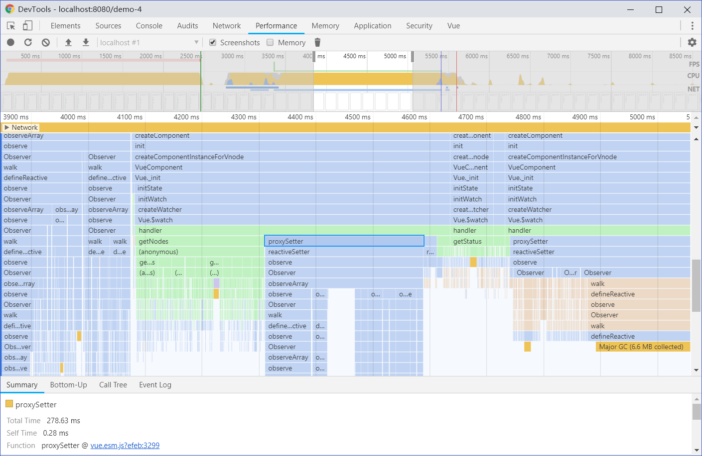
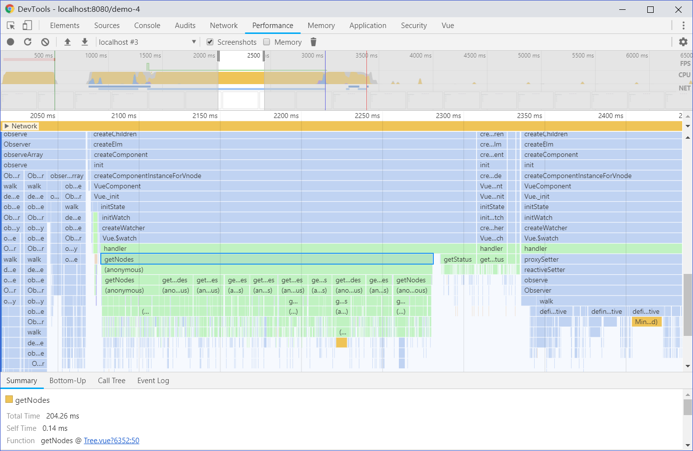

前言
Vue 2.0 在发布之初，就以其优秀的运行时性能著称，你可以通过这个第三方 benchmark 来对比其他框架的性能。Vue 使用了 Virtual DOM 来进行视图渲染，当数据变化时，Vue 会对比前后两棵组件树，只将必要的更新同步到视图上。
Vue 帮我们做了很多，但对于一些复杂场景，特别是大量的数据渲染，我们应当时刻关注应用的运行时性能。
本文仿照 Vue Cookbook 组织形式，对优化 Vue 组件的运行时性能进行阐述。
基本的示例
在下面的示例中，我们开发了一个树形控件，支持基本的树形结构展示以及节点的展开与折叠。
我们定义 Tree 组件的接口如下。data 绑定了树形控件的数据，是若干颗树组成的数组，children 表示子节点。expanded-keys 绑定了展开的节点的 key 属性，使用 sync 修饰符来同步组件内部触发的节点展开状态的更新。
1 | <template> |
Tree 组件的实现如下，这是个稍微复杂的例子，需要花几分钟时间阅读一下。
1 | <template> |
展开或折叠节点时，我们只需更新 expanded-keys，status 计算属性便会自动更新，保证关联子节点可见状态的正确。
一切准备就绪，为了度量 Tree 组件的运行性能，我们设定了两个指标。
- 初次渲染时间
- 节点展开 / 折叠时间
在 Tree 组件中添加代码如下，使用 console.time 和 console.timeEnd 可以输出某个操作的具体耗时。
1 | export default { |
同时，为了放大可能存在的性能问题，我们编写了一个方法来生成可控数量的节点数据。
1 | <template> |
你可以通过这个 CodeSandbox 完整示例来实际观察下性能损耗。点击箭头展开或折叠某个节点，在 Chrome DevTools 的控制台（不要使用 CodeSandbox 的控制台，不准确）中输出如下。
1 | first rendering: 406.068115234375ms |
在笔者的低功耗笔记本下，初次渲染耗时 400+ms，展开或折叠节点 200+ms。下面我们来优化 Tree 组件的运行性能。
若你的设备性能强劲，可修改生成的节点数量，如
this.getRandomData(4, 10)生成 10000 个节点。
使用 Chrome Performance 查找性能瓶颈
Chrome 的 Performance 面板可以录制一段时间内的 js 执行细节及时间。使用 Chrome 开发者工具分析页面性能的步骤如下。
- 打开 Chrome 开发者工具，切换到 Performance 面板
- 点击 Record 开始录制
- 刷新页面或展开某个节点
- 点击 Stop 停止录制

console.time 输出的值也会显示在 Performance 中，帮助我们调试。更多关于 Performance 的内容可以点击这里查看。
优化运行时性能
条件渲染
我们往下翻阅 Performance 分析结果，发现大部分耗时都在 render 函数上，并且下面还有很多其他函数的调用。

在遍历节点时，对于节点的可见性我们使用的是 v-show 指令，不可见的节点也会渲染出来，然后通过样式使其不可见。因此尝试使用 v-if 指令来进行条件渲染。
1 | <li |
优化后的性能耗时如下。
1 | first rendering: 216.407958984375ms |
你可以通过改进后的示例 (Demo2) 来观察组件的性能损耗，相比优化前有很大的提升。
展开或折叠节点时，v-if 指令会导致频繁的组件创建和销毁，于是我尝试使用 <keep-alive> 去给组件做缓存，但效果不是很明显。也许因为 <li> 的渲染太过简单。这里不再深究。
双向绑定
在前面的示例中，我们使用 .sync 对 expanded-keys 进行了“双向绑定”，其实际上是 prop 和自定义事件的语法糖。这种方式能很方便地让 Tree 的父组件同步展开状态的更新。
但是，使用 Tree 组件时，不传 expanded-keys，会导致节点无法展开或折叠，即使你不关心展开或折叠的操作。这里把 expanded-keys 作为外界的副作用了。
1 | <!-- 无法展开 / 折叠节点 --> |
这里还存在一些性能问题，展开或折叠某一节点时，触发父组件的副作用更新 expanded-keys。Tree 组件的 status 依赖了 expanded-keys，会调用 this.getStatus 方法获取新的 status。即使只是单个节点的状态改变，也会导致重新计算所有节点的状态。
我们考虑将 status 作为一个 Tree 组件的内部状态，展开或折叠某个节点时，直接对 status 进行修改。同时定义默认的展开节点 default-expanded-keys。status 只在初始化时依赖 default-expanded-keys。
1 | export default { |
使用 Tree 组件时，即使不传 default-expanded-keys，节点也能正常地展开或收起。
1 | <!-- 节点可以展开或收起 --> |
优化后的性能耗时如下。
1 | first rendering: 91.48193359375ms |
你可以通过改进后的示例 (Demo3) 来观察组件的性能损耗。
冻结数据
到此为止，Tree 组件的性能问题已经不是很明显了。为了进一步扩大性能问题，查找优化空间。我们把节点数量增加到 10000 个。
1 | // 生成 10000 个节点 |
这里，我们故意制造一个可能存在性能问题的改动。虽然这不是必须的，当它能帮助我们了解接下来所要介绍的问题。
将计算属性 nodes 修改为在 data 的 watcher 中去获取 nodes 的值。
1 | export default { |
这种修改对于实现的功能是没有影响的，那么性能情况如何呢。
1 | first rendering: 490.119140625ms |
使用 Performance 工具尝试查找性能瓶颈。

我们发现，在 getNodes 方法调用之后，有一段耗时很长的 proxySetter。这是 Vue 在为 nodes 属性添加响应式，让 Vue 能够追踪依赖的变化。getStatus 同理。
当你把一个普通的 JavaScript 对象传给 Vue 实例的
data选项，Vue 将遍历此对象所有的属性，并使用 Object.defineProperty 把这些属性全部转为 getter/setter。
对象越复杂，层级越深，这个过程消耗的时间越长。当我们存在 1w 个节点时，proxySetter 的时间就会非常长了。
这里存在一个问题，我们不会对 nodes 某个具体的属性做修改，而是每当 data 变化时重新去计算一次。因此，这里为 nodes 添加的响应式是无用的。那么怎么把不需要的 proxySetter 去掉呢？一种方法是将 nodes 改回计算属性，一般情况下计算属性没有赋值行为。另一种方法就是冻结数据。
使用 Object.freeze() 来冻结数据，这会阻止修改现有的属性，也意味着响应系统无法再追踪变化。
1 | this.nodes = Object.freeze(this.getNodes(this.data)); |
查看 Performance 工具，getNodes 方法后已经没有 proxySetter 了。

性能指标如下，对于初次渲染的提升还是很可观的。
1 | first rendering: 312.22998046875ms |
你可以通过改进后的示例 (Demo4) 来观察组件的性能损耗。
那我们能否用同样的办法优化 status 的跟踪呢？答案是否定的，因为我们需要去更新 status 中的属性值 (changeExpanded)。因此，这种优化只适用于其属性不会被更新，只会更新整个对象的数据。且对于结构越复杂、层级越深的数据，优化效果越明显。
替代方案
我们看到，示例中不管是节点的渲染还是数据的计算，都存在大量的循环或递归。对于这种大量数据的问题，除了上述提到的针对 Vue 的优化外，我们还可以从减少每次循环的耗时和减少循环次数两个方面进行优化。
可以使用字典来优化数据查找。
1 | // 生成 defaultExpandedKeys 的 Map 对象 |
defaultExpandedKeys.includes 的事件复杂度是 O(n)，expandedKeysMap[key] 的时间复杂度是 O(1)。
默认折叠的树，我们
这样做的价值
应用性能对于用户体验的提升是非常重要的，也往往是容易被忽视的。试想一下，一个在某台设备运行良好的应用，到了另一台配置较差的设备上导致用户浏览器崩溃了，这一定是一个不好的体验。又或者你的应用在常规数据下正常运行，却在大数据量下需要相当长的等待时间，也许你就因此错失了一部分用户。
总结
性能优化是一个长久不衰的话题，没有一种通用的办法能够解决所有的性能问题。性能优化是可以持续不端地进行下去的，但随着问题的深入，性能瓶颈会越来越不明显，优化也越困难。
本文的示例具有一定的特殊性，但它为我们指引了性能优化的方法论。
- 确定衡量运行时性能的指标
- 确定优化目标，例如实现 1W+ 数据的秒出
- 使用工具（Chrome Performance）分析性能问题
- 优先解决问题的大头（瓶颈）
- 重复 3 4 步直到实现目标